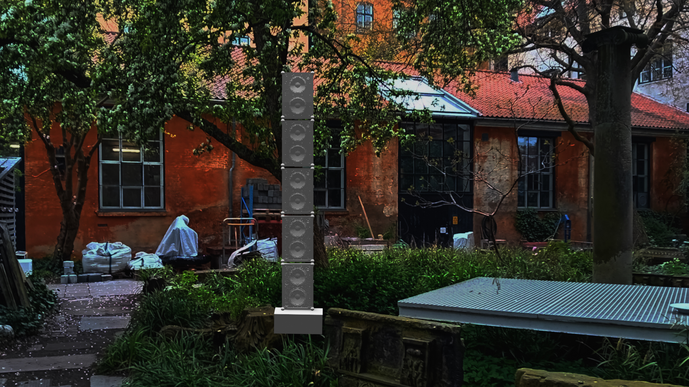

Here is the files I wrote about:
Perhaps the work "Shell" in particular would be a good idea to check, as it similarly comments on industry (quarries), but with a different angle: Size. We made the rope-work to try to recreate the slope in a 300 meter long quarry on the Faroe Islands.
Other things :)
Why?
To comment on industry, a work needs force that can match that of industry, I think. In this case, DB. What is awakened in the body by this interconnection of the sounds of the construction and the sculptural appearance of the Soundboks’s? It is rhythm, but is it music - is it recognizable to everyone? A product is always more than its form and function. Not least a Soundboks. It is a symbol of contrast as it challenges people's ideas of the quiet city of private property while at the same time expanding worlds for others. And at the same time the city is, in its essence, constant noise. Which sounds do we accept and which do some people report to the police?
Locked area / security:
The sculpture garden is a locked area. In addition, to be sure that nothing happens to the Soundbokses, I would take them in every evening, where it is only possible to open up with a student card for the Sculpture School (30 people max). I'm also going to put a wire at the top speaker in the strap on opposite sides so the tower can't tip over. In addition, students patrol as guards during opening hours, to make sure that nothing happens.
Btw:
Audio file attached Is not the final one. I am about to get an agreement to record with professional equipment on a construction site in Copenhagen, so that the sound quality will be good.
What is Rundgang? (text from kunstakademiet.dk)
Rundgang is our annual open house exhibition: Every year in June, the Schools of Visual Arts open their doors to the general public
Visitors are free to explore buildings that are normally inaccessible to the public, and along the way they will find a plethora of art created by students: in workshops and studios, in kitchens and auditoriums, in the poetic sculptor’s garden – quite simply in all the places where the students and their professors work every day.
The Rundgang open house event is rather like a status update: it gauges the current state of affairs. Once a year, the general public can get a glimpse behind the scenes and explore the trends emerging within contemporary art. They also get to see many works while they are still in progress. In this way the Academy and its students offer visitors a unique chance to gain insight into how budding artists work and learn – and, of course, to see art created by student artists who are still exploring and being formed by their training.